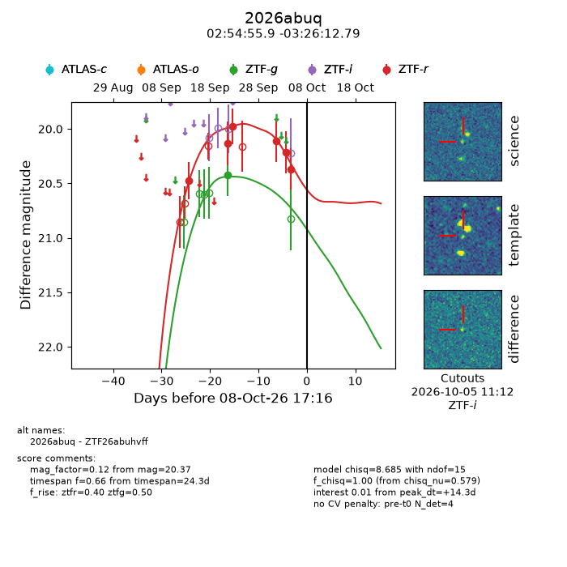
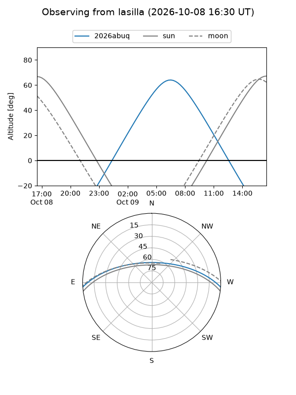
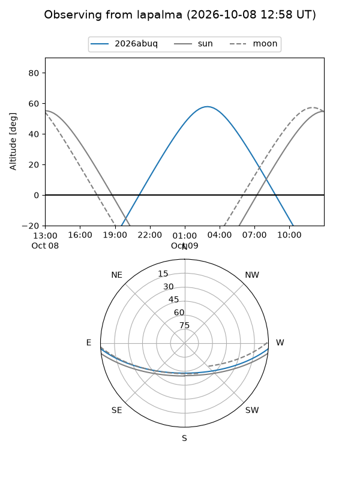
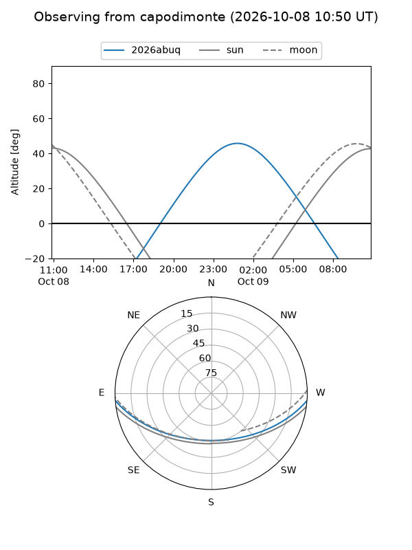
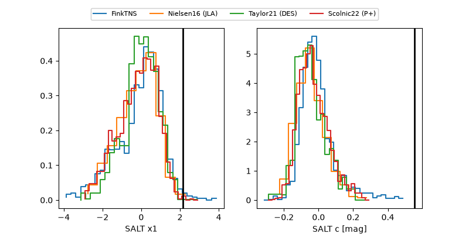

2026abuq
Target 2026abuq at 2026-10-08 17:18
Aliases and brokers:
FINK-ZTF: ztf.fink-portal.org/ZTF26abuhvff
Lasair-ZTF: lasair-ztf.lsst.ac.uk/objects/ZTF26abuhvff
ALeRCE-ZTF: alerce.online/object/ZTF26abuhvff
YSE-PZ: ziggy.ucolick.org/yse/transient_detail/2026abuq
TNS name: wis-tns.org/object/2026abuq
Direct TNS query: direct search
alt names
ZTF26abuhvff (ztf,fink_ztf)
2026abuq (tns,yse)
Coordinates:
equatorial (ra, dec) = 43.7331,-3.43689
equatorial (HMS+DMS) = 02:54:55.95,-03:26:12.79
galactic (l, b) = (179.5659,-52.17053)
Flags:
TNS type: nan
peak dt: +14.3
Photometry:
last ztfg=20.42, ztfr=20.37
1 ztfg, 6 ztfr detections
Lightcurve

Visibility



Additional plots
